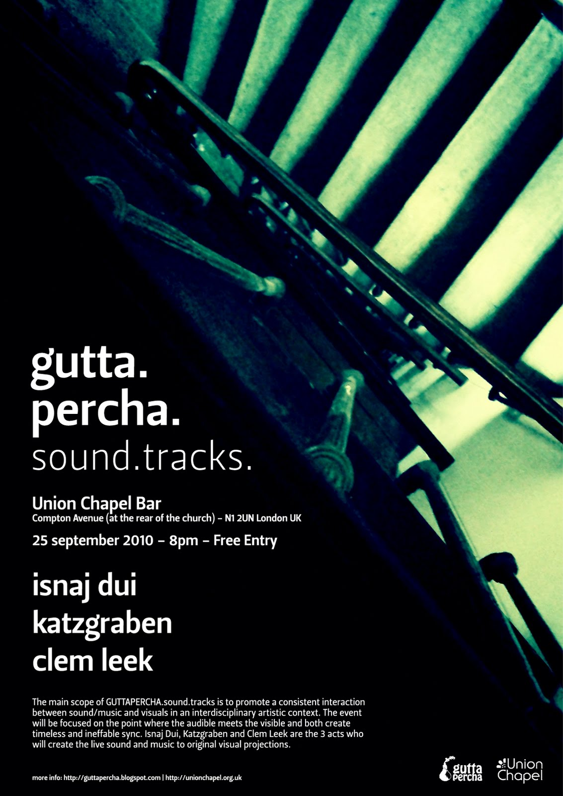
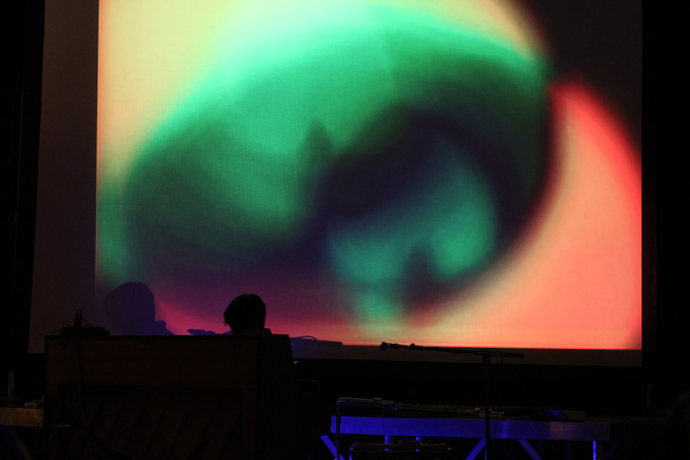
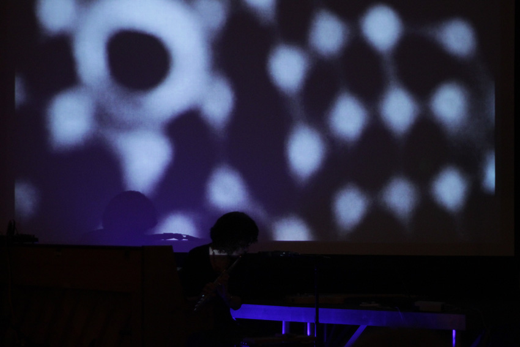
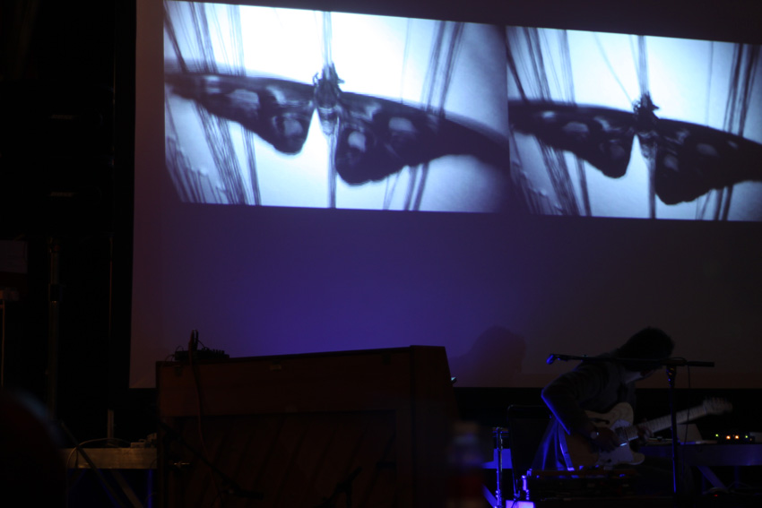

guttapercha.sound.tracks
Union Chapel Bar, London — 25.09.2010

GUTTAPERCHA.sound.tracks promotes a consistent interaction between sound/music and visuals in an interdisciplinary artistic context. The event focuses on the point where the audible meets the visible and both create timeless and ineffable sync. Isnaj Dui, Katzgraben and Clem Leek are the 3 acts who created live sound and music to original visual projections.
Isnaj Dui
Standing somewhere between modern classical and electronica, Isnaj Dui (real name Katie English) conveys a minimal yet capturing sound using electronically manipulated flutes and homemade instruments. With three solo releases on her own FBox Records as well as 'Amacrine' on Smallfish (2007) and 'Unstable Equilibrium' on Home Normal (2009), English has gained a solid reputation as both a live performer and recording artist.
Katzgraben
Since 2008 Katzgraben have been subject of several transmutations: from solitary improvised experimental guitars and melodicas (Katzgraben 2008), to conceptual monolithic soundscapes immersed in a Lynchian sonorous narrative (We Burn Daylight 2009) and invisible soundtracks for art exhibitions (Uncommon Background 2009). Usually a duo, sometimes a trio, Katzgraben have been ultimately connected to The Sound Of Places live presentations.
Clem Leek
Clem Leek is a musician & composer from the South East. He has just completed his MA in Music Composition and is now releasing his first E.P, ‘Through the Annular’ on Schedios Records. Clem draws his influence from a number of sources, from the minimalist composers Steve Reich & Philip Glass and also such musicians as Keith Kennif, Max Richter, Matt Hales and many more, creating a beautiful mix of piano melodies and subtle instrumentation, all set to the crackle of a 78rpm record.
Event Details
Union Chapel Bar — 25 September 2010, 8 pm
Compton Avenue (at the rear of the church), N1 2UN London UK
Free Entry
Documentation


